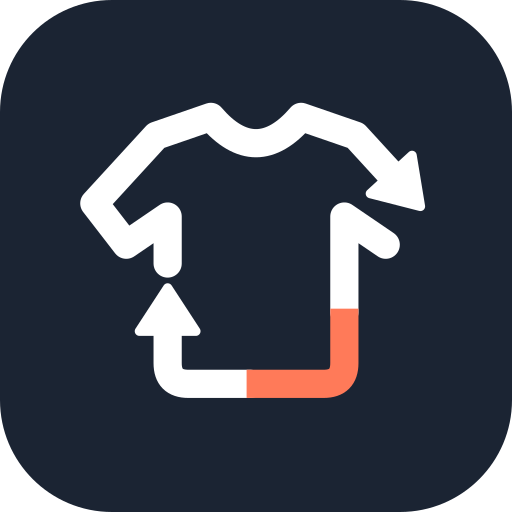

Today’s pick MinimalExcellent match

Good morning10°–14°C
Cool for work. An outer layer would help, but none is tagged for work yet.
Mockup for the Phase 6 direction choice. Sample data: the fixture closet in tools/fixtures (synthetic images, no real photos). Only the look is designed here; buttons change their state but not the content.
Mockup for the Phase 6 direction choice. Sample data: the fixture closet in tools/fixtures (synthetic images, no real photos). Only the look is designed here; buttons change their state but not the content.
Items flagged by condition, wear and age. Nothing is removed until you confirm it.
Zipper sticks, since Oct 2. Until it is fixed, it is suggested only for sport, home and chores.
Mockup for the Phase 6 direction choice. Sample data: the fixture closet in tools/fixtures (synthetic images, no real photos). Only the look is designed here; buttons change their state but not the content.
Shop is not part of the Phase 6 mockups: the chosen direction carries to it in Phase 11.